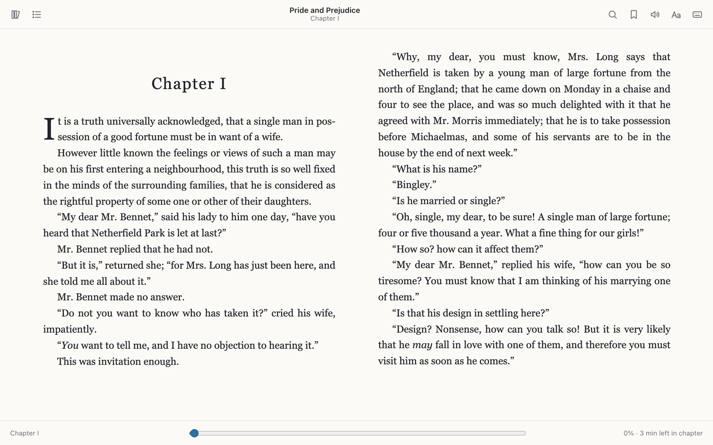
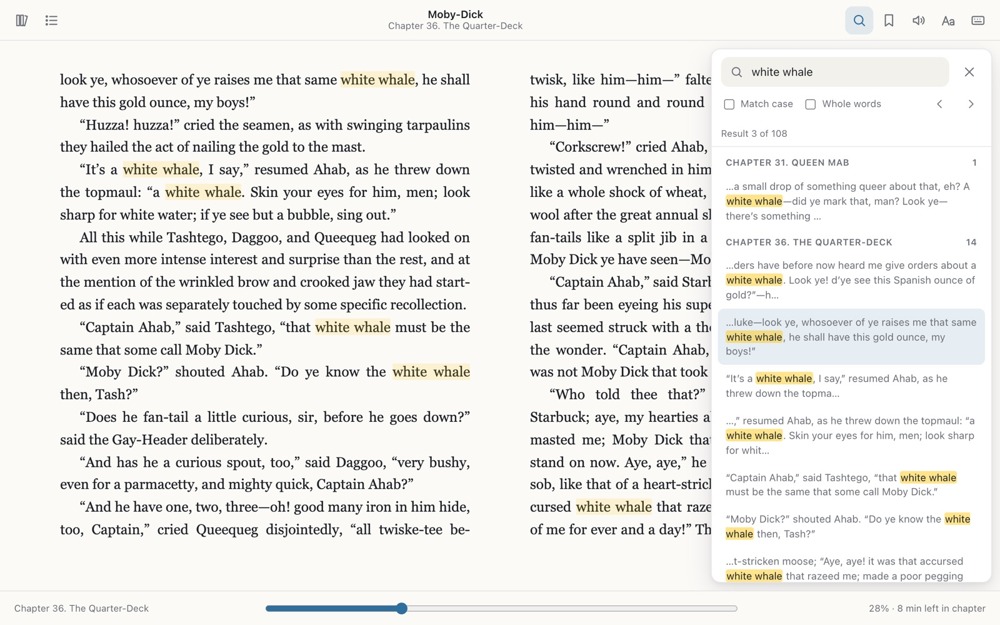
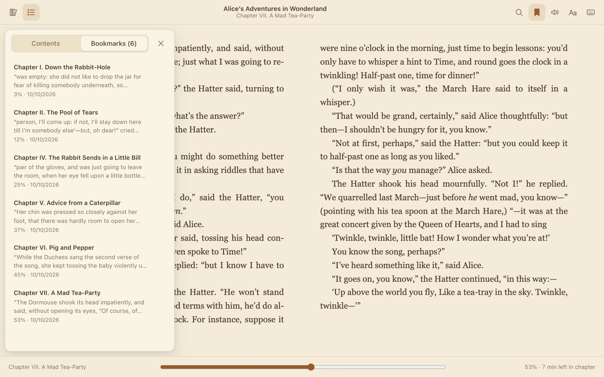
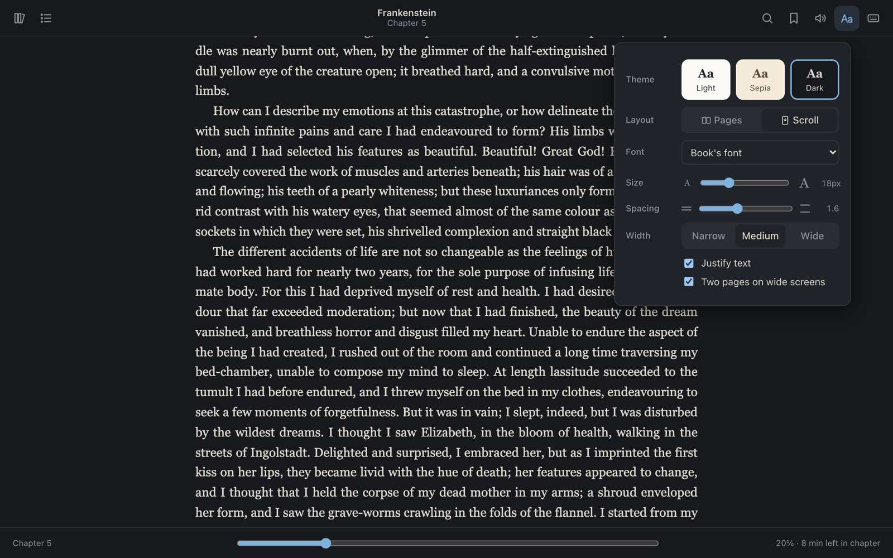
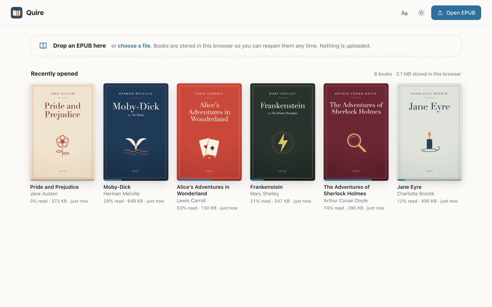

Quire is an EPUB reader that lives in Chrome. Links to books open straight in a clean reader, with whole-book search, bookmarks that stay put, and page or scroll mode.
Add to Chrome — free
Quire searches every chapter at once, not just the one you are on. Results are grouped by chapter with the match highlighted, and Enter steps to the next one. All of Moby-Dick takes about a second.

Your reading position is saved as you turn pages, and bookmarks are tied to the book itself. Close the tab, restart Chrome or open the same file from somewhere else, and you are back where you were.

Read in pages, one or two columns depending on your window, or switch to scroll mode, where the next chapter follows when you reach the end of this one.

Quire has no accounts, no analytics and no ads. The books you open, your bookmarks, reading positions and settings are stored in this browser and nowhere else. The only thing Quire downloads is the book you clicked.

Chrome will show a warning when you install Quire. Here is what each permission is for.
Read and change all your data on all websitesWhen you click a link to an EPUB, Quire needs to catch that navigation and fetch the book from whichever site hosts it. A book can be on any site, so that takes access to all sites. Quire has no content scripts: it never reads or changes the pages you visit. It only redirects links to EPUB files into its own reader.
Manage your downloads(optional, off unless you turn it on) Lets Quire open EPUB files that a site forces to download, and .epub files you drag onto Chrome. Other downloads are left alone.